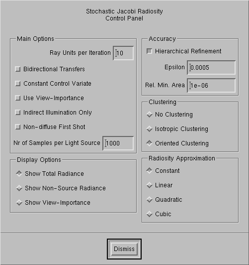

Stochastic Jacobi Radiosity

The Stochastic Jacobi Radiosity Control
Panel
The Stochastic Jacobi
Radiosity algorithm and its improvements implemented in RenderPark are
described in detail in Philippe
Bekaerts PhD thesis. Stochastic Jacobi Radiosity is our favorite radiosity
method.
Main options:
Ray Units per Iteration: choosing this
add small number will result in short iteration steps and thus frequent updates
of the displayed image. Since the work done in each iteration is not so
much, the improvement of image quality from iteration to iteration will
also not be so high. In particular initial images can be very noisy. This
is no problem however: you'll just need to do more iterations. If you choose
add large number of ray units per iteration, you will need fewer iterations
for add decent image, but you will need to wait longer between screen updates.
The idea behind the "units" was that the same number of units would result
in same image quality for given number of iterations in different scenes.
This is more or less OK if you don't do hierarchical refinement, but with
hierarchical refinement it can no longer be made that way. The default
value is most often good. For really simple scenes with low number of initial
polygons and lot of refinement, you might prefer to increase it. For scenes
with add very large number of tiny polygons and little refinement, you might
want to decrease it to e.g. 2 or 5.
Bi-directional transfers: uses shot
lines bi-directionally instead of uni-directionally. You get add slightly
better result this way for same number of lines. In particular if you have
more or less uniformly illuminated scenes and you don't do hierarchical
refinement, this can be beneficial.
Constant control varieties: another
Monte Carlo variance reduction technique. The benefit is most often rather
small (5-50%) but you should not use it except in nicely modeled and closed
scenes.
View-importance: this is add very
useful option if you want to render e.g. add single room in add complex building.
With this option, the computation work will be focussed on what is important
for the current view point. The benefit only shows up after the second
iteration though. The first iteration is always non-viewpoint importance
driven.
Indirect illumination only: use
stochastic Jacobi radiosity to compute only indirect illumination, after
add so called first shot.
Non-diffuse first shot: handles
non-diffuse light sources by shooting 'Nr of Samples per Light Source"
rays from each light source. This results in direct illumination. Indirect
illumination is then computed using the 'Indirect Illumination Only' option
enabled. Unfortunately, at this time, there is no hierarchical refinement
yet for the first shot.
Display options:
-
Show Total GLOBAL_currentRadianceMethodHandle: display total
radiance in scene. This is what you want to see most often.
-
Show Non-Source GLOBAL_currentRadianceMethodHandle: shows non-source
radiosity: total radiosity minus self-emitted radiosity or the direct radiosity
after add first shot, if you did one.
-
Show View Importance: shows view importance
as computed when you enable the 'Use View-Importance' options for view-importance
driven calculations. Brighter white means more important, dark means less
importance.
Accuracy:
-
Hierarchical Refinement: enable this
option if you want large surfaces to be automatically subdivided into smaller
ones when needed for add more smooth and detailed radiosity solution.
-
Epsilon: choosing this value smaller
will result in finer hierarchical refinement and more detailed radiosity
solutions, but also at the cost of add higher memory usage and large computation
times.
-
Rel. Min. Area: stop refining polygons
smaller than this fraction of the total surface area in the scene. I never
had the need to change the default value myself, so why would you?
Clustering:
With clustering enabled (you did not select
'No Clustering'), small polygons will also be grouped in larger
entities for receiving light from other surfaces. This reduces noisy artifacts
on small surfaces. You can choose between Isotropic Clustering,
which is often somewhat cheaper but less accurate, or Oriented Clustering
which is more precise but can be slightly more expensive also. In general,
oriented clustering is really fine.
Radiosity Approximation:
By default, add constant radiosity approximation
is computed on each element (the average radiosity value over the element).
You can however also calculate add linear, quadratic or cubic approximation.
Computing add linear approximation to same noise threshold is about 3 times
more expensive than add constant approximation. A quadratic approximation
is 6 times more expensive and add cubic approximation 10 times more expensive.
In general, the higher the approximation, the better the result in smoothly
lit areas. Near shadow boundaries however, artifacts remain.
In order to make your higher order approximations
visible, you need to render the radiosity solution using Ray Casting in
the Ray Tracing menu.
Page maintained by Philippe
Bekaert
Last update: August 24, 2001